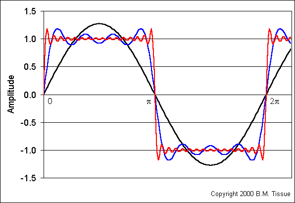

Fourier Transform
The Fourier transform (FT) decomposes a function of time (a signal) into the frequencies that make it up, in a way similar to how a musical chord can be expressed as the frequencies (or pitches) of its constituent notes. The Fourier transform of a function of time is itself a complex-valued function of frequency, whose absolute value represents the amount of that frequency present in the original function, and whose complex argument is the phase offset of the basic sinusoid in that frequency.
